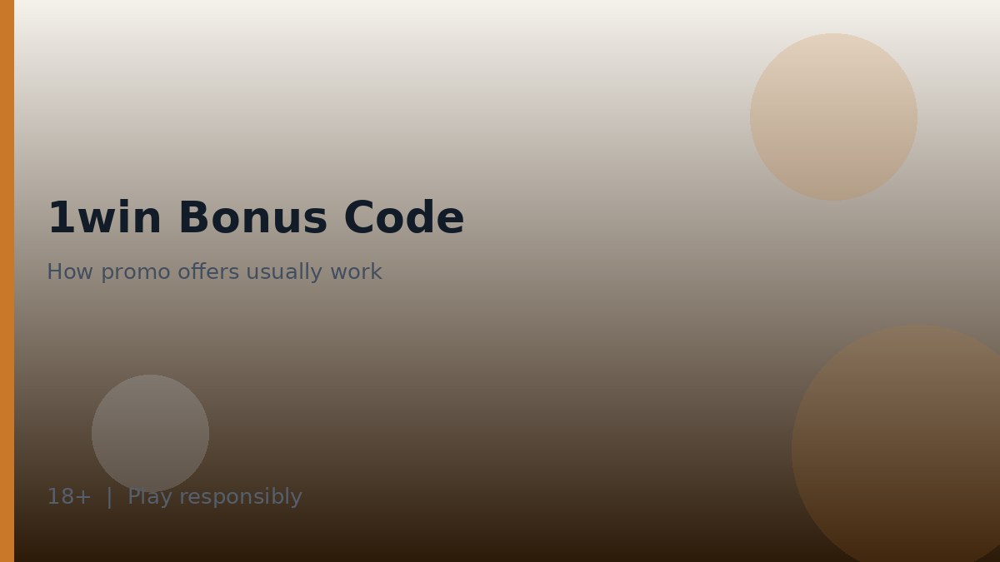

How a bonus code 1win promotion usually works
A bonus code 1win field is simply a promotional identifier you enter during registration or in a cashier/promotions form so the operator can attach an offer to your account. The code itself is not cash. Value—if any—appears only after the operator accepts the code and after you meet the written conditions attached to that offer.

Affiliate disclosure: some pages that mention codes may include partner links. A commission does not create a special code with hidden perks beyond what the operator publishes. If a stranger sells “VIP codes” that bypass terms, treat that as a scam risk.
General flow: find an offer on the official promotions area, read the full terms, enter the code where the form allows, opt in if required, make any qualifying deposit described in those terms, and track wagering progress in the account. Exact minimum deposits, expiry timers, and game weighting differ by campaign—check the operator T&Cs rather than trusting screenshots from social media.
For product context around where bonuses might apply, see 1win casino, the 1win overview, and geo notes on 1win argentina. Secure the account first via 1win login hygiene before chasing promotions.
Wagering concepts in plain language
Wagering—sometimes called playthrough—means you must stake bonus funds or deposit-plus-bonus amounts a stated number of times before withdrawal of bonus-related balances is allowed. Weighting means different game categories may contribute different percentages toward that requirement. Expiry means the clock can run out before you finish.
| Concept | Plain meaning | What to verify in T&Cs |
|---|---|---|
| Wagering multiple | How many times funds must be staked | Whether it applies to bonus only or deposit + bonus |
| Game weighting | How much each game type contributes | Slots vs tables vs sports contributions |
| Minimum deposit | Smallest deposit that qualifies | On-screen cashier value for the offer |
| Expiry | Time limit to meet conditions | Start time and end time rules |
| Max cashout / cap | Limits on convertible winnings | Any ceiling stated for the campaign |
- Read whether opt-in is automatic or manual.
- Check whether cancelling a bonus forfeits related winnings.
- Note excluded games that contribute zero.
- Confirm whether simultaneous offers conflict.
- Watch for country or currency eligibility lines.
Because we do not invent numbers, you will not find a universal wagering figure on this page. Open the live terms for the specific bonus code 1win campaign you are considering and write down the multiple, weighting, deposit threshold, and expiry in your own notes before you opt in.
What to read in the T&Cs before entering a code
Promotional terms are denser than marketing banners. Skim with a checklist so you do not miss the clauses that affect withdrawals.
- Eligibility: new accounts only, or existing customers too?
- Code entry location and deadline.
- Qualifying deposit method restrictions, if any.
- Wagering multiple and contribution table.
- Maximum bet while a bonus is active.
- Expiry, forfeiture, and how to cancel.
| Clause | Why it matters | Player action |
|---|---|---|
| Max bet while wagering | Breaking it can void the bonus | Stay under the stated stake cap |
| Payment method exclusions | Some methods may not qualify | Confirm before depositing |
| Duplicate account rules | Shared households can trigger flags | One account per person unless rules say otherwise |
| Verification before withdrawal | KYC may be required first | Prepare documents early |

If any clause is ambiguous, ask support in writing before depositing. Verbal chat summaries are easier to misunderstand than a ticket reply you can keep. Remember that promotions are optional; declining a bonus can be the clearer financial choice when terms feel too tight for your style of play.
Common mistakes with promotional codes
Most disappointment around a bonus code 1win campaign comes from process errors rather than mysterious platform behaviour. The list below covers patterns that show up repeatedly across the industry.
- Entering a code after the qualifying deposit instead of before, when the terms required prior entry.
- Assuming sports and casino contributions are equal without reading weighting.
- Staking above a maximum bet rule during wagering.
- Chasing losses because a time-limited expiry creates pressure.
- Trusting unofficial Telegram “daily codes” that lead to phishing sites.
| Mistake | Safer habit |
|---|---|
| Screenshot-only research | Open live T&Cs on the official site |
| Reusing passwords on promo microsites | Keep login on the main official domain |
| Stacking rumours about hidden codes | Use only codes shown in official promotions |
| Ignoring expiry clocks | Set a personal reminder or decline the offer |
- Decide whether you even want a bonus this month.
- If yes, read terms and note four numbers: min deposit, wagering, max bet, expiry.
- Secure 1win login details before opting in.
- Opt in deliberately, then play within your session budget.
- Stop if wagering pressure changes your mood for the worse.
Promotions should not redefine your bankroll. If meeting wagering would require staking more than you planned to spend on entertainment, walk away. That decision is always available.
Responsible use of offers and next reading
Bonus funds can make sessions longer; longer sessions need stronger limits. Pair any bonus code 1win opt-in with deposit caps, loss caps, and time reminders. Adults 18+ only. Keep promotional emails away from minors, and do not present offers as a path to income.
- Treat bonuses as optional wrappers around entertainment spending.
- Prefer clarity over headline percentages.
- Use official support for code failures; avoid paid “recovery” agents.
- Read 1win aviator before applying crash-heavy play to wagering, because variance can consume balances quickly.
- Review is 1win legal in argentina if eligibility in your location is unclear.

When a campaign ends, check whether leftover bonus balances expire and whether real-money balances remain withdrawable under ordinary cashier rules. Then return to ordinary play—or take a break—without hunting for the next code out of compulsion. For mobile claim flows, the 1win app page covers safer install practices so promotional landing pages do not push untrusted packages.
- After wagering completes or expires, review your transaction history.
- Withdraw only through methods in your own name.
- Disable promotional notifications if they pressure you.
- Revisit this guide whenever a new code appears in your inbox.
Further practical notes for careful readers
Readers using bonus code 1win materials as orientation should keep three habits in parallel: verify the official access path, set entertainment budgets before depositing, and re-read operator terms whenever a promotion or product area changes. Those habits travel with you from homepage summaries into specialist articles without requiring you to memorise every interface label.
When something on a third-party site conflicts with the live cashier or written terms, favour the live product and the written terms. Screenshots age quickly. Informal chat summaries omit footnotes. Your own notes, dated and linked to the version of the terms you saw, will serve you better during support conversations than a collage of social-media claims.
Keeping expectations honest over time
Technical hygiene supports the same calm approach. Keep devices updated, refuse unsolicited installers, and treat unexpected login prompts as hostile until proven otherwise. If you share a household device, log out fully and protect credentials so minors cannot reach real-money areas. Adults aged 18 and over only may hold accounts on the framing used throughout bonus code 1win coverage on this site.
Entertainment outcomes vary from session to session. A short run of favourable results does not prove a method; a short run of losses does not demand recovery stakes. The house edge in wagering products is structural. Your advantage as a consumer sits in preparation, limits, and the freedom to stop—not in predicting each round.
Product-area map you can reuse on any visit
Whether you open sports, casino, live tables or crash titles, keep the same mental map: entertainment first, verification second, stake size third. The diagram below summarises the product buckets most multi-vertical brands expose inside one account.
- Sports needs market-rule literacy before kick-off or tip-off.
- Casino lobbies need info-panel reading before the first spin.
- Live tables add connection quality as a practical factor.
- Crash titles add a cash-out timing decision that does not remove house edge.
| Check | What good looks like | Red flag |
|---|---|---|
| Domain authenticity | Typed or bookmarked official URL | Links from cold DMs or pop-ups |
| Age gate | Clear 18+ requirement before play | No age notice anywhere |
| Responsible tools | Deposit/loss/time limits visible | No limit controls at all |
| Terms access | Bonus and account terms linked near offers | Promo claims without T&Cs |
Evaluation sequence before any deposit
A calm sequence beats improvisation. Work left to right through domain authenticity, age eligibility, cashier visibility, limit tools and written terms. Skipping a step is how phishing pages and misunderstood bonuses slip through.
- Confirm you are on a genuine domain.
- Confirm you meet the 18+ requirement where you live.
- Open the cashier and note methods shown to your account.
- Locate deposit, loss and time-limit tools if offered.
- Read bonus and account terms before accepting any offer.
| Parameter | Safer habit | Why |
|---|---|---|
| Bankroll | Set a loss limit before opening the lobby | Stops chase behaviour mid-session |
| Time | Use a reality-check or phone timer | Short rounds compress time perception |
| Games | Pick one product area per session | Reduces impulsive switching |
Responsible gambling
18+. Casino games, sports betting and crash titles discussed on this site are intended for adults aged 18 and over only. Gambling can be addictive - please play responsibly and never stake more than you can afford to lose.
- International support information: BeGambleAware.
- Advice and treatment resources: GamCare.
- If you are in Argentina, also look for locally available counselling and helpline resources through public health channels, and use any deposit/loss/time limits the operator provides.
1win Argentina Guide publishes informational reviews and checklists. We do not invent licence numbers or claim UK Gambling Commission status for operators without verification in data/casinos/. Nothing on this site is financial or gambling advice, and no outcome is promised.